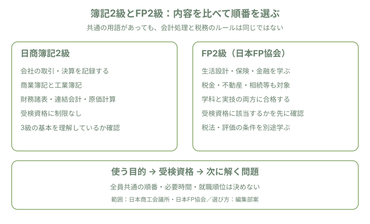

会社の取引・原価計算を学びたいか、生活設計・保険・金融などを学びたいか。まず使う場面を決め、受検資格と試験範囲を確認します。「簿記の方が必ず難しい」「簿記を先に取ればFPが簡単になる」という一律の順位や順番は示しません。
FP欄は日本FP協会が実施する2級FP技能検定を比較対象にします。他の実施機関の実技科目・手数料まで同一とは扱いません。
| 項目 | 日商簿記2級 | FP2級（日本FP協会） |
|---|---|---|
| 主な内容 | 商業簿記・工業簿記（原価計算を含む） | 生活設計・保険・金融・税金・不動産・相続等 |
| 受検資格 | 資格制限なし。3級合格は必須ではない | 3級合格、FP業務の実務2年以上、AFP認定研修修了、旧金融渉外技能審査3級合格のいずれか。申請時の条件も公式で確認 |
| 試験方式 | 統一試験または会場で受けるネット試験 | 学科・実技とも原則CBT。両方の合格が必要 |
| 基本受験料 | 5,500円（税込）。ネットのインターネット申込は事務手数料550円別、会場問い合わせ方式は会場ごと | 学科5,700円＋実技6,000円＝11,700円（非課税）。事務・払込手数料は別途 |
出典：日本商工会議所2級試験科目、ネット試験案内、2級案内、大阪商工会議所受験資格、日本FP協会試験要綱（2026年10月31日確認）。教材代、講座代、再受検費用、受検資格を満たす研修等の費用は別です。
簿記とFPでは受検者や前提資格、範囲、合格の判定単位が異なります。簿記の統一試験とネット試験、FPの学科と実技、実施機関・期間を混ぜた「20〜30％対30〜40％」という比較は撤回しました。最新結果を見る際も、対象期間・受検者数・試験方式・科目をそろえて読んでください。
結果の確認先：日本商工会議所2級統一試験、2・3級ネット試験。FPの科目別基準は上記試験要綱で確認できます（2026年10月31日確認）。
簿記2級には連結会計や工業簿記があり、FP2級は6分野を扱います。どちらも自分の初学分野では復習が必要です。星の数での難易度判定や、「FPは浅い」「CBTだけ難化している」という断定を選ぶ根拠にしません。
一律の必要時間や「先に簿記を取ればFPの理解速度が上がる」という効果の根拠は確認できませんでした。次の手順は編集部の計画案です。必要時間の調査値や合格保証ではありません。
| 使いたい場面 | 先に確かめること |
|---|---|
| 会社の取引・決算・製造原価を扱いたい | 簿記2級の範囲と、希望職種の実務・必須/歓迎資格を照合する |
| 生活設計・保険・金融・不動産等を扱いたい | FPの範囲と、仕事で必要な資格・業務上の条件を照合する |
| どちらも仕事で使う予定がある | 近い締切と受検資格、使う業務を整理して順番を決める |
これは仕事内容から考える編集部の案で、求人件数・採用担当者への調査・就職評価のランキングではありません。資格名だけで採用や独立・収入が決まるとは扱わず、実際の募集要件を確認します。
財務諸表や税金に関連する言葉が重なる一方、簿記の有価証券の会計処理と、FPの資産運用・相続財産評価は目的やルールが同じではありません。税効果会計を学べば所得税の控除や相続税評価も解ける、とはいえません。

範囲の出典：日本商工会議所出題区分表（2026年度までと2027年度以降を区別）、日本FP協会2級試験範囲（2026年10月31日確認）。順番の判断は編集部案です。